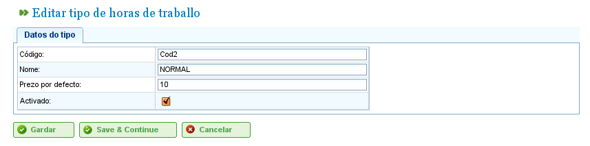

Správa nákladů
Contents
Náklady
Správa nákladů umožňuje uživatelům odhadovat náklady na zdroje použité v projektu. Pro správu nákladů musí být definovány následující entity:
- Typy hodin: Tyto označují typy hodin odpracovaných zdrojem. Uživatelé mohou definovat typy hodin jak pro stroje, tak pro pracovníky. Příklady typů hodin zahrnují: „Přesčasové hodiny placené 500 Kč za hodinu." Pro typy hodin lze definovat následující pole:
- Kód: Externí kód pro typ hodin.
- Název: Název typu hodin. Například „Přesčas".
- Výchozí sazba: Základní výchozí sazba pro typ hodin.
- Aktivace: Označuje, zda je typ hodin aktivní nebo ne.
- Kategorie nákladů: Kategorie nákladů definují náklady spojené s různými typy hodin v určitých obdobích (která mohou být neurčitá). Například náklady na přesčasové hodiny pro kvalifikované pracovníky první třídy v příštím roce jsou 600 Kč za hodinu. Kategorie nákladů zahrnují:
- Název: Název kategorie nákladů.
- Aktivace: Označuje, zda je kategorie aktivní nebo ne.
- Seznam typů hodin: Tento seznam definuje typy hodin zahrnuté v kategorii nákladů. Specifikuje období a sazby pro každý typ hodin. Například s měnícími se sazbami lze každý rok zahrnout do tohoto seznamu jako období typu hodin se specifickou hodinovou sazbou pro každý typ hodin (která se může lišit od výchozí hodinové sazby pro daný typ hodin).
Správa typů hodin
Uživatelé musí pro registraci typů hodin postupovat podle těchto kroků:
- Vyberte „Správa odpracovaných typů hodin" v nabídce „Správa".
- Program zobrazí seznam existujících typů hodin.

Seznam typů hodin
- Klikněte na „Upravit" nebo „Vytvořit".
- Program zobrazí formulář pro úpravu typu hodin.

Úprava typů hodin
- Uživatelé mohou zadat nebo změnit:
- Název typu hodin.
- Kód typu hodin.
- Výchozí sazbu.
- Aktivaci/deaktivaci typu hodin.
- Klikněte na „Uložit" nebo „Uložit a pokračovat".
Kategorie nákladů
Uživatelé musí pro registraci kategorií nákladů postupovat podle těchto kroků:
- Vyberte „Správa kategorií nákladů" v nabídce „Správa".
- Program zobrazí seznam existujících kategorií.

Seznam kategorií nákladů
- Klikněte na tlačítko „Upravit" nebo „Vytvořit".
- Program zobrazí formulář pro úpravu kategorie nákladů.

Úprava kategorií nákladů
- Uživatelé zadají nebo změní:
- Název kategorie nákladů.
- Aktivaci/deaktivaci kategorie nákladů.
- Seznam typů hodin zahrnutých v kategorii. Všechny typy hodin mají následující pole:
- Typ hodin: Zvolte jeden z existujících typů hodin v systému. Pokud žádné neexistují, musí být typ hodin vytvořen (tento postup je vysvětlen v předchozí podkapitole).
- Datum zahájení a ukončení: Datum zahájení a ukončení (druhé je volitelné) pro období, které se vztahuje na kategorii nákladů.
- Hodinová sazba: Hodinová sazba pro tuto konkrétní kategorii.
- Klikněte na „Uložit" nebo „Uložit a pokračovat".
Přiřazení kategorií nákladů ke zdrojům je popsáno v kapitole o zdrojích. Přejděte do části „Zdroje".